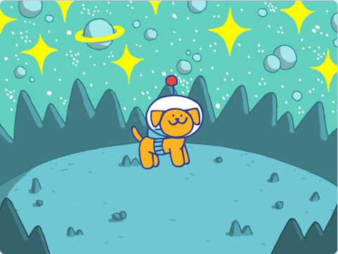
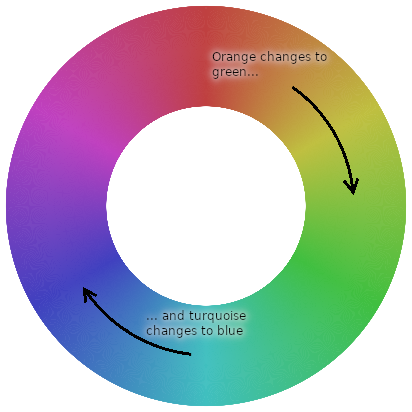
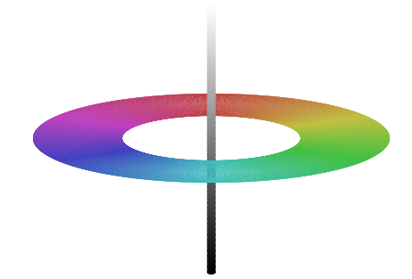
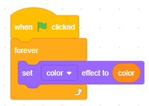
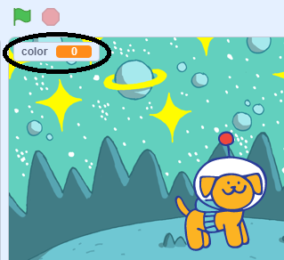
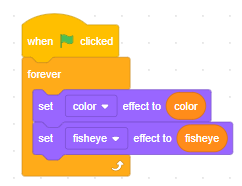
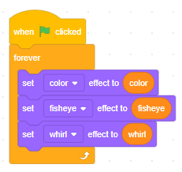
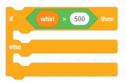
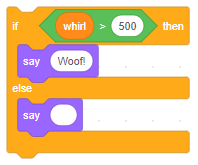
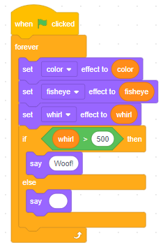

Colour
Start from an empty Scratch project (rpf.io/scratch-new — remember to delete the cat sprite).
Add the sprite called 'Dot' (the space dog) and one of the space backdrops. Make sure Dot is in the middle.
Before we bring in the black hole, a good makeover often has a change of colour. Add the set color effect to 0, and click it. What happens?
Change the 0 to 10, i.e. set color effect to 10, and click it. What happens?
Change the 10 back to 0 and click the block. What happens?
Change the 0 to 30 and click the block. What happens?
Try a few different numbers. See how Dot changes colour, but also notice how her backpack and antenna change colour too. Is there a number that makes Dot orange again (hint — try 100, 200, etc)?
When you set the colour effect, you are spinning the sprite's colours around the 'colour wheel'.
When you set the colour effect to 200, you spin the colours all the way around the colour wheel, so it looks like nothing has changed.
Notice that the white inside the helmet doesn't change. (If you have sharp eyes you might notice it changes very slightly.) This is because white is at the centre of the colour wheel, and the centre of a wheel doesn't move when the wheel spins.
Black is also at the centre of the colour wheel. How can white and black both be at the centre? Because the colour wheel is a simple way of understanding colours, but they're actually more complicated. White and black, and every shade of grey in between, are on an 'axis' through the centre of the colour wheel.
Even this is still too simple, for example where is brown? Where is pink? We might learn more about colours in a later module.
It's hard work typing new numbers and clicking blocks. Let's see how using 'variables' makes things easier.
Variables
Nest your set color effect to ... inside a forever loop, snapped under a when  clicked. What happens if you click the green flag and type in different color effect numbers?
clicked. What happens if you click the green flag and type in different color effect numbers?
Click 'Make a Variable' (the button in the 'Variables' section). A variable is like a box that you can put things such as numbers and words into.
Different boxes have different names. Enter 'color' as the new variable name and click OK (leave 'For all sprites' checked).
Lots of code (including the Scratch website) is written by Americans, and they spell colour without the 'u', so let's do the same to be consistent.
You should see a new color block has appeared in the code blocks area. Drag one into the code area, and drop it into the slot of the set color effect to ....
Right-click on the color 'readout' on the stage.
Click 'slider'. Click the green flag and drag the slider left and right. What happens?
Right-click on the color readout again, and this time click 'change slider range'. What's wrong with the maximum value?
Change the maximum value to 200 and click OK. Can you spin Dot's colours all the way until you get back to orange?
Pick a nice colour for Dot, and let's see how else we can change her look.
Fisheye
There is an effect called 'fisheye' which distorts a sprite so that it looks to us the way it would look to a fish.
Add a set color effect to 0 and change it to set fisheye effect to 0.
Nest the new block inside the forever loop, underneath the set color effect to color.
Make a new variable called 'fisheye' and drag it into the new block's slot.
Turn the fisheye readout into a slider.
Just like you did for the color readout — right-click on it, and click 'slider'.
Drag the slider to the right. What happens?
Change the slider range's minimum value to -100 and drag the slider left. What happens?
Pick a nice amount of fisheye for Dot, and let's look at one more effect.
Whirl
Add a set color effect to 0 and change it to set whirl effect to 0.
Nest the new block inside the forever loop, underneath the set fisheye effect to fisheye.
Make a new variable called 'whirl' and drag it into the new block's slot.
Turn the whirl readout into a slider.
Change the slider range's maximum value to 1000 and drag the slider right. What happens?
Drag the slider all the way to the left.
Dogs like to warn their owners of danger by barking. Let's make Dot bark if things get too whirly.
Barking
Drag an if-then-else onto the code area (note the 'else' — up until now we've only used the if-then blocks).
Grab a > 50 (from the 'Operators' section) and drop it into the if-then-else's slot. Change the 50 to 500.
Drag a whirl block into the > 500's slot.
If whirl is greater than 500, we want Dot to bark, else we want her to stop barking. Drag two say Hello! blocks onto the code area.
Change one to say 'Woof!' and delete all the text out of the other. Nest them in the if-then-else block like this:
If helps to read your code to check it makes sense... if whirl is greater than 500 then say 'Woof!', else say nothing.
Nest this script inside the forever block, underneath the set whirl effect to whirl.
Does your code look like this:
Good. Click the full screen button, click the green flag, and drag the whirl slider. Check that Dot barks when things get really twisty. See how she looks when you combine different effects together.
Next steps
Exit full screen, and save your game.
See if you can make it better.
What other effects could you can try?
What other things could Dot do if effects get too extreme?
What ideas can you come up with?
What did you think of this module?
I didn't like it

It was OK

I loved it